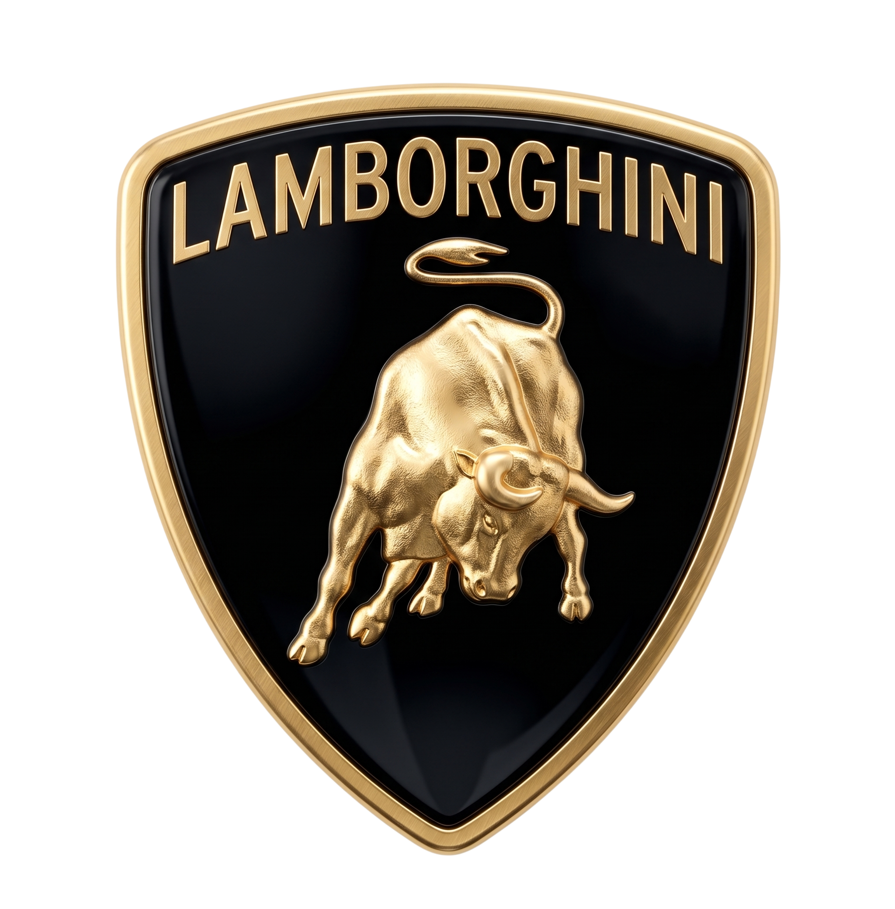
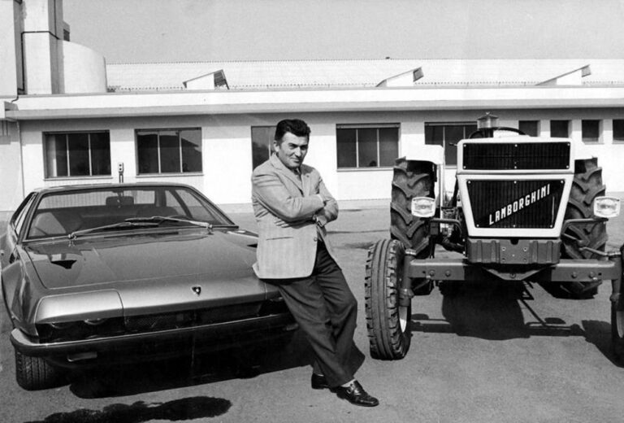
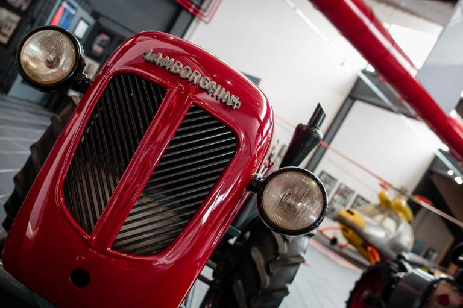
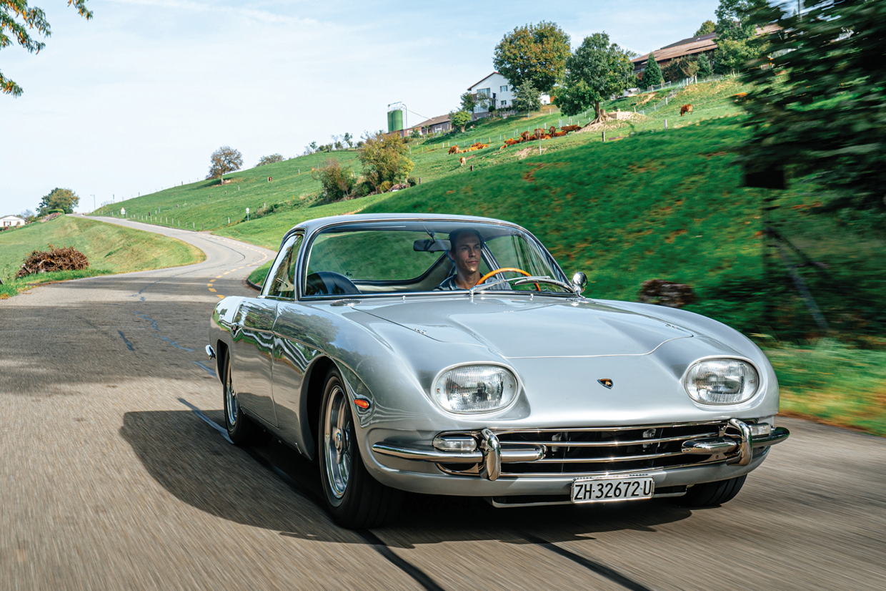
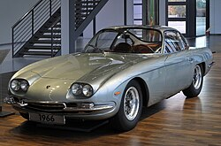
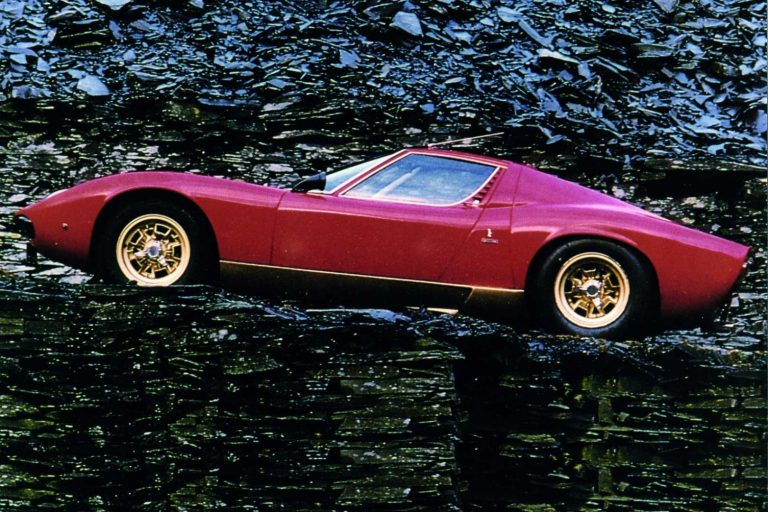
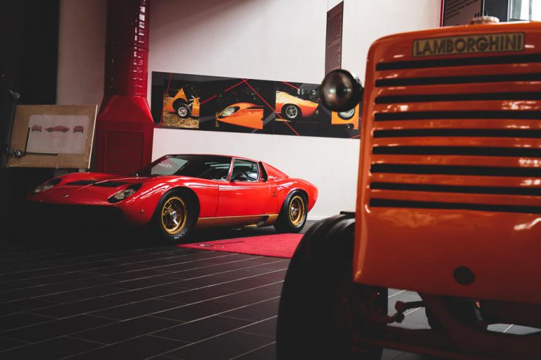
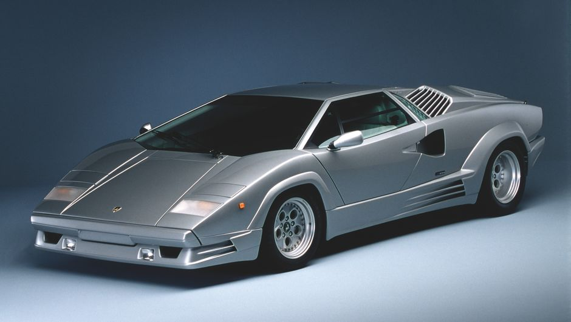
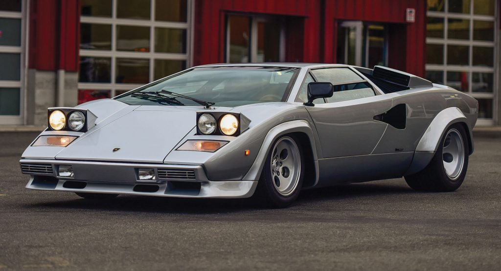
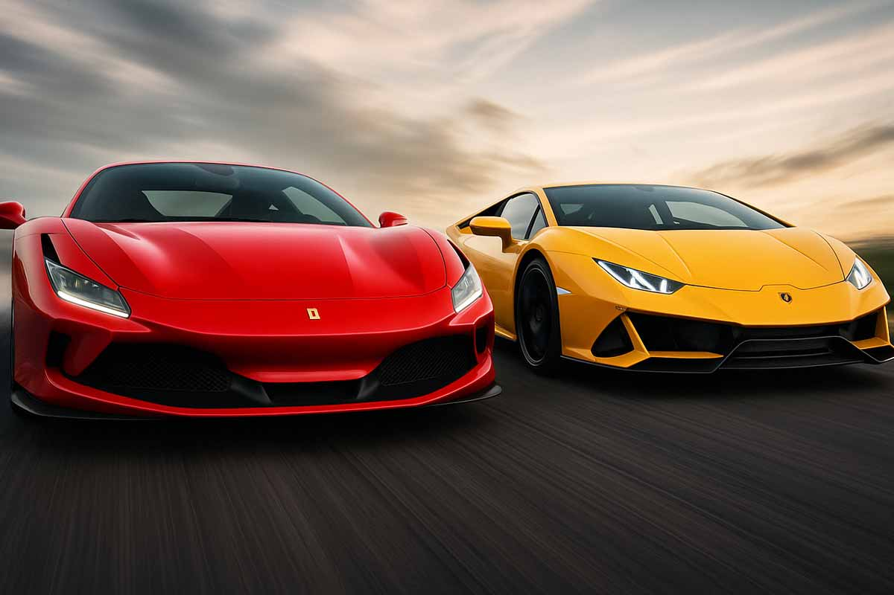

A história da Lamborghini
de tratores a superesportivos
Se você é apaixonado por velocidade, provavelmente quis possuir um modelo da Lamborghini. Mas você sabe como a empresa começou? Conheça agora a história de seu criador e como foi sua jornada até a empresa se tornar uma das principais fabricantes de supercarros do mundo.

Ferruccio Lamborghini nasceu em 1916 e desde a infância era fascinado por motores, realizando experimentos com os equipamentos de campo de seu pai, que era fazendeiro no interior da Itália. Durante a Segunda Guerra Mundial, Ferruccio serviu no exército italiano como mecânico de veículos militares.
Após o fim da guerra, Lamborghini voltou para casa e começou a trabalhar em sua oficina, onde consertava carros, motos e caminhões. Logo descobriu que tinha um talento natural para mecânica e decidiu fundar sua própria empresa, a Lamborghini Trattori, em 1948.
Quem foi Lamborghini Trattori?
A Lamborghini Trattori rapidamente se tornou um sucesso na Itália e em toda a Europa, produzindo tratores de alta qualidade, apreciados por sua confiabilidade e desempenho. Em 1960, a empresa já era uma das maiores fabricantes de tratores do país.

No entanto, apesar do sucesso da Lamborghini Trattori, Ferruccio tinha um outro grande interesse: carros de luxo. O italiano era um grande admirador da Ferrari e possuía vários modelos da marca. No entanto, ele ficava frustrado com os problemas mecânicos que enfrentava regularmente com seus carros com logotipo de cavalo.
Conheça a história da Lamborghini
Em 1962, Lamborghini então decidiu que era hora de criar sua própria montadora de carros de luxo. Ele juntou uma equipe de engenheiros e designers para começar a trabalhar no desenvolvimento do seu primeiro carro.
O primeiro modelo da Lamborgihini foi o 350 GT, apresentado no Salão do Automóvel de Genebra em 1963. O primeiro carro teve sucesso instantâneo, elogiado por sua potência, desempenho e design. O supercarro carregava um motor V12 de 3,5 litros e produzia nada menos que 280 cv de potência, o que permitia uma velocidade máxima de mais de 240 km/h.


O sucesso do 350 GT levou a Lamborghini a continuar a produzir carros de luxo com cada vez mais qualidade. Em 1966, a empresa lançou o Miura, que é considerado por muitos como um dos carros mais bonitos da indústria. O Miura carregava sob o capô um motor V12 de 4 litros que produzia 350 cv de potência e era capaz de atingir mais de 280 km/h.


Os anos 1970 foram decisivos para a história da marca, com a chegada do Lamborghini Countach em 1971, veículo que se tornou um símbolo da extravagância e do estilo. O Countach era equipado com um motor V12 de 4 litros capaz de produzir 370 cv de potência, chegando a máxima de 300 km/h.


Nos anos seguintes a Lamborghini continuou a produzir carros de luxo incríveis, incluindo o Espada, o Jalpa e o Diablo. A empresa também ficou conhecida por suas colaborações com designers famosos, como Bertone, Zagato e Gandini.
Ferruccio Lamborghini deixou de ser presidente da empresa em 1972, após vender sua participação na empresa para a companhia suíça Georges-Henri Rossetti. Existem várias razões que levaram a sua saída da empresa.
Uma das principais razões foi a crise do petróleo que afetou fortemente a indústria automobilística na década de 1970. A Lamborghini, como muitas outras empresas, estava enfrentando dificuldades financeiras na época.
Além disso, Ferruccio estava descontente com a direção que a empresa estava seguindo, pois acreditava que a Lamborghini deveria se concentrar na produção de carros de luxo em vez de carros esportivos.

Ferrari x Lamborghini
Para fazer os primeiros modelos de carro, Ferruccio contratou um engenheiro chamado Giotto Bizzarrini, que era ex-funcionário da Ferrari. O fundador pediu que seus carros fossem projetados exclusivamente para utilização em estradas, em contraste com os motores de corrida modificados utilizados pela Ferrari.
Em seus primeiros anos, a empresa teve dificuldades para estabelecer sua reputação como fabricante de carros esportivos de elite. No entanto, com o lançamento do lendário Miura em 1966, a marca ganhou reconhecimento mundial e chamou a atenção da Ferrari.
A partir daí, as duas marcas começaram a competir diretamente no mercado de carros esportivos de luxo, cada uma tentando superar a outra em termos de design, desempenho e inovação tecnológica. Isso resultou em uma série de carros icônicos, como o Lamborghini Countach, já mencionado acima, e o Ferrari Testarossa, que se tornaram símbolos da rivalidade entre as duas marcas.